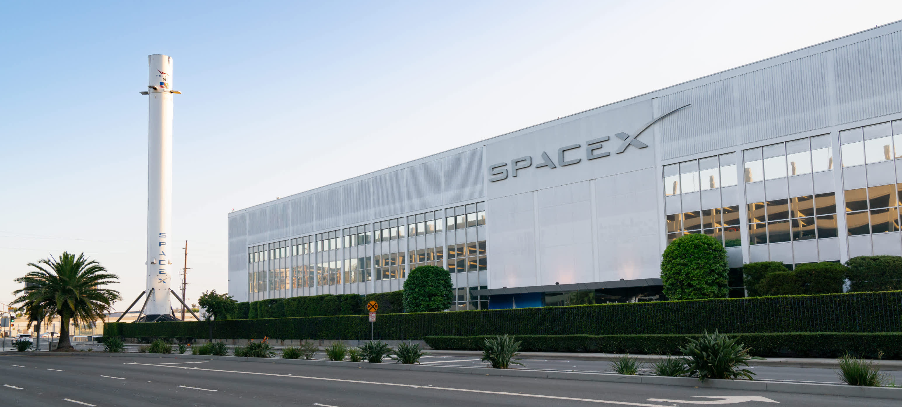
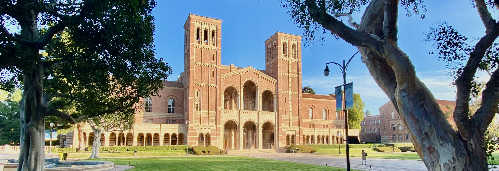

Hi, I'm Isaac.
 I am a second-year medical student (MS2) at the UCLA David Geffen School of Medicine, with a Bachelor of Science in Physiological Science from UCLA (Class of 2023). Before medical school, I spent nearly two years as a Medical Intern at Space Exploration Technologies (SpaceX), where I designed the Dragon commercial medical kit and trained commercial astronaut crews for missions including Inspiration4 and Polaris Dawn.
I am a second-year medical student (MS2) at the UCLA David Geffen School of Medicine, with a Bachelor of Science in Physiological Science from UCLA (Class of 2023). Before medical school, I spent nearly two years as a Medical Intern at Space Exploration Technologies (SpaceX), where I designed the Dragon commercial medical kit and trained commercial astronaut crews for missions including Inspiration4 and Polaris Dawn.
My interests sit at the intersection of medicine, aerospace, and austere environments. I am passionate about space medicine, wilderness medicine, and trauma surgery, and I bring hands-on experience in operations management, medical equipment engineering, and clinical research. I'm driven by the challenge of delivering exceptional medical care in resource-limited and extreme settings — whether that's low Earth orbit, the backcountry, or a Level I trauma center.
Work

Medical Intern — SpaceX (2021–2023)
At Space Exploration Technologies (SpaceX), I developed expertise in aerospace medical operations across multiple commercial spaceflight missions. Starting on the COVID-19 testing team, I quickly took on greater responsibility, volunteering for a critical research qualification sprint leading up to the groundbreaking Inspiration4 mission. I went on to spearhead the development and qualification of the SpaceX Medical Kit and manage research hardware programs across multiple missions.
Medical Hardware Qualification and Training
- Managed INSCOP (on-orbit anti-emetic) research project for the all-civilian Inspiration4 mission (Summer/Fall 2021)
- Led medical kit flight build and training for Axiom-1 mission, working with NASA counterparts to qualify to ISS toxicity standards (Winter 2022)
- Developed new medical kit bag and internal organizational design for improved stowage, access, and repacking (Spring 2022)
- Redesigned med kit per crew feedback to optimize usability and reduce volume by 50% (Summer/Fall 2022)
- Eliminated a major requirement for flight pharmaceutical qualification testing, removing ~35 parts from scope (Fall 2022)
- Led overhaul of medical equipment procurement and qualification for simplified and accelerated flight readiness, navigating DEA compliance (Fall 2022–Spring 2023)
Research Hardware — Qualification Ownership
- Selected for and led a research equipment qualification sprint for the all-civilian Inspiration4 mission, qualifying 30 pieces of hardware in 13 days and enabling 8 successful research projects (Fall 2021)
- Developed receipt pathway and managed research qualification campaign for Polaris Dawn, responsible for ~75 research parts across 12 research projects (Spring 2022–Spring 2023)
Other Contributions
- Poster presenter at the 2022 NASA Human Research Program Investigators' Workshop (HRP-IWS), discussing the INSCOP study focus, efficacy data, and lessons learned (Spring 2022)
- Facilitated early development of company-wide COVID testing program automation, making testing accessible for 10,000 SpaceX employees across 4 primary facilities (Fall 2021)
Emergency Ward Clerk — Mammoth Hospital
Gained clinical experience in a rural emergency department setting in the Eastern Sierra, supporting patient intake and ED operations in an austere, high-acuity environment.
Research
Space Medicine
My primary research focus is on enabling long-duration human spaceflight through novel medical solutions.
- On-Demand Peptide Therapeutics for Multi-Year Space Exploration — First-author manuscript investigating pharmaceutical production using engineered Bacillus subtilis for autonomous drug manufacturing during deep-space missions. (Submitted for publication)
- Direct Intracranial Pressure Measurement in Spaceflight — Developed a proposal to SpaceX for direct ICP monitoring during orbital flight to address spaceflight-associated neuro-ocular syndrome (SANS).
- INSCOP Anti-Emetic Study — Managed on-orbit anti-emetic research for the Inspiration4 mission; presented findings at the 2022 NASA HRP-IWS conference.
Clinical Research
- Aortoesophageal Fistula Post-TEVAR — Case report on a fatal aortoesophageal fistula following thoracic endovascular aortic repair. (In preparation)
Leadership & Interest Groups
- Co-Director, Aerospace Medicine Interest Group — UCLA DGSOM
- Chair, Wilderness Medicine Interest Group — UCLA DGSOM
Education

UCLA David Geffen School of Medicine
Doctor of Medicine (MD), Expected 2027
Currently an MS2 completing clinical clerkships, with rotations in neurosurgery, trauma surgery, and head & neck surgery at Harbor-UCLA Medical Center. Actively preparing for USMLE Step examinations and exploring career paths in trauma surgery and emergency medicine.
UCLA — B.S. Physiological Science (2023)
Graduated with recognition as a Gold Shield Scholar and recipient of the UCLA Alumni Scholarship. Outside of academics, I competed as a varsity skipper on the UCLA Club Sailing team, served in the Student-Alumni Association coordinating events including Spring Sing 2022 (a campus-wide talent showcase for over 3,000 students), and worked as a part-time photographer covering athletic events.
Certifications & Training
- Advanced Open Water Diver & Nitrox Certified (PADI)
- Basic Life Support (BLS) & CPR — American Red Cross
- IRB Certificate in Biomedical Research
Community Engagement
- Outreach Lead, The Backpack Project (TBPLA) — coordinating resource distribution to unhoused communities in Los Angeles
Contacts
If you have any questions or would like to connect, feel free to reach out to me at 702-423-2116 or send me an email.